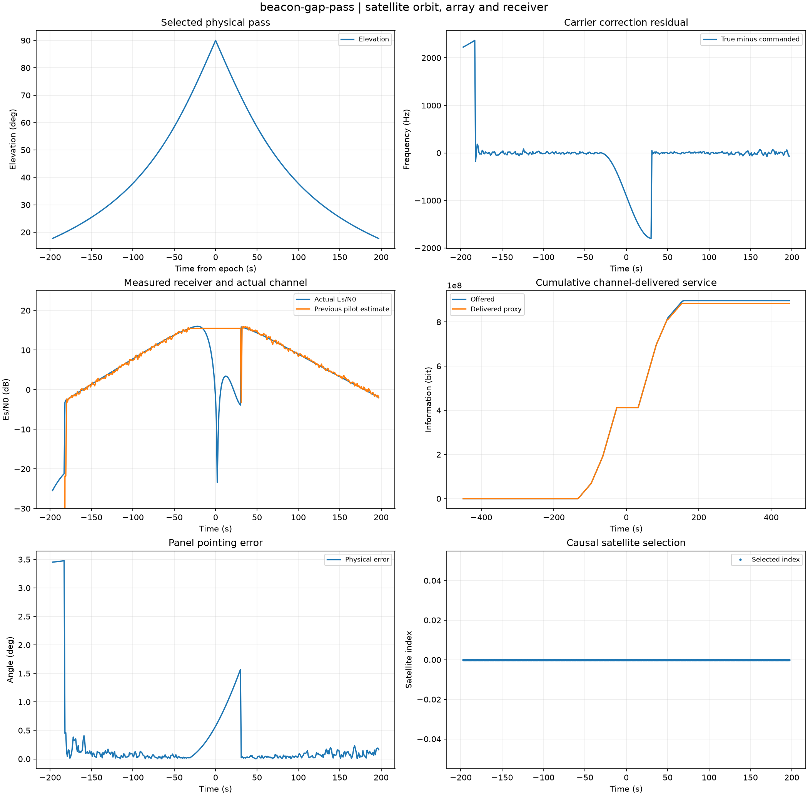

Reproducible satellite orbit, array and receiver. Units and field components are printed on the scientific axes. peak d-q quantities use exp(+i omega t); terminal currents point into the protected line.
Sealed numeric archive | Summary CSV | Physical parameters | Run request | Source and environment

| delivered_mbit | 883.5 |
|---|---|
| handovers | 0 |
| locked_carrier_rms_hz | 23.502226379702368 |
| locked_point_rms_deg | 0.0957051243499205 |
| locked_samples | 317 |
| offered_mbit | 896.8 |
These are simulations, not hardware measurements. Network-model, measurement, timing and statistical uncertainty require distinct convergence checks. Singular or unilluminated data use explicit masks.
Source revision: 9a21824463bee585d4ba8354070cc9108436346d.
Dirty checkout: False.
Configuration SHA-256: 8bd39f52fb46050c69bfb51a4cc53b958b60f0e141d8697cbd40cae56bf91cae.
Replay preserves original source and parameter provenance. SHA-256 manifests detect changed bytes; they are unsigned integrity records, not certificates of physical validity.